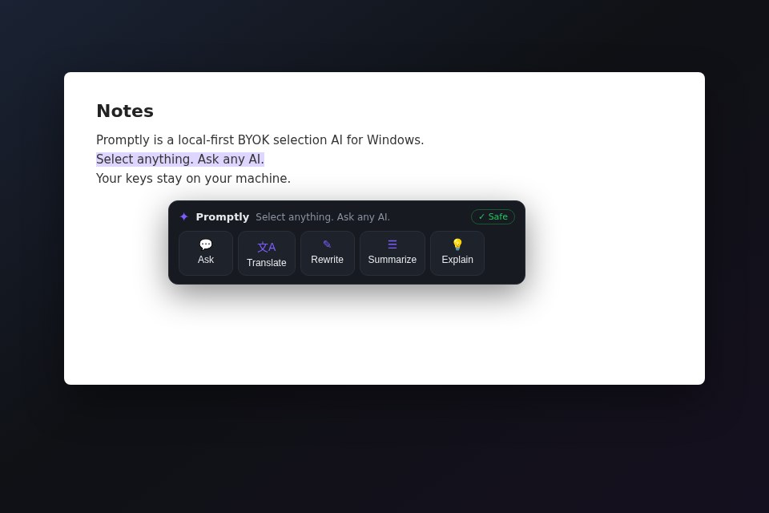
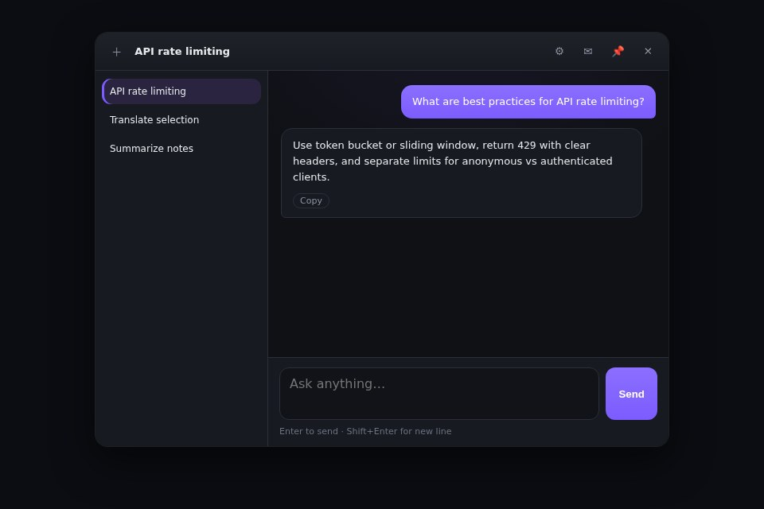

Three-state selection toolbar
Select text in any app and get Ask / Translate / Rewrite / Summarize / Explain. Streaming results stay in place — one-click copy.

Chat follow-ups + screenshot vision
Open results in chat to keep asking. Paste a screenshot with Ctrl+V and use a vision model.
Floating ball, always ready
Low-profile, draggable anywhere. Click to open chat.
🔑 BYOK — your key, your models
OpenAI-compatible / Anthropic / Gemini. Your API key talks directly to the provider — no relay, no markup.
🔒 Local-first privacy
Chats stay in local SQLite. Keys are encrypted with Windows DPAPI. Zero content telemetry.
🌍 10 languages
English / Français / Deutsch / Español / 日本語 / 한국어 / 简体中文 / 繁體中文 / Русский / العربية.
Get started in 3 steps
- Install and launch — the floating ball appears on the right edge.
- Tray → Settings → Provider lab: paste Base URL + API key → Test connection → Save.
- Select text in any app → toolbar appears → hit Translate.